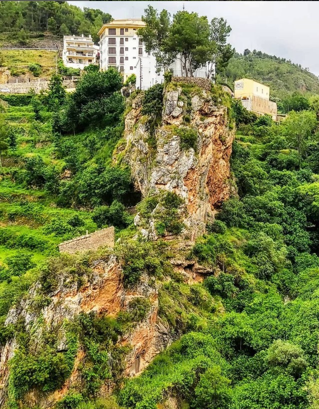
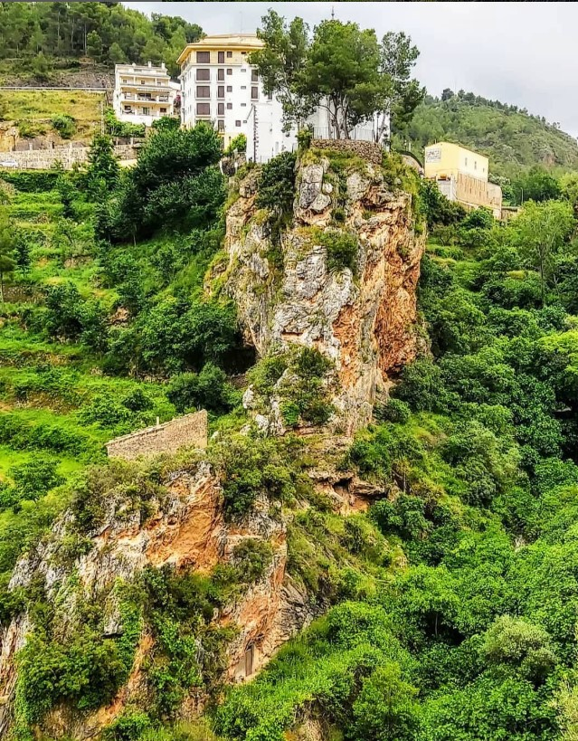

Casa Elina II 🌾
Casa Elina II se encuentra en el corazón de Lucena del Cid, ideal para parejas o grupos pequeños que buscan una estancia tranquila y acogedora.


Dispone de un cálido salón con chimenea, cocina totalmente equipada y habitaciones decoradas con encanto rústico.
La casa ofrece un equilibrio perfecto entre confort moderno y tradición, con vistas espectaculares a las montañas y al casco antiguo de Lucena.
 
